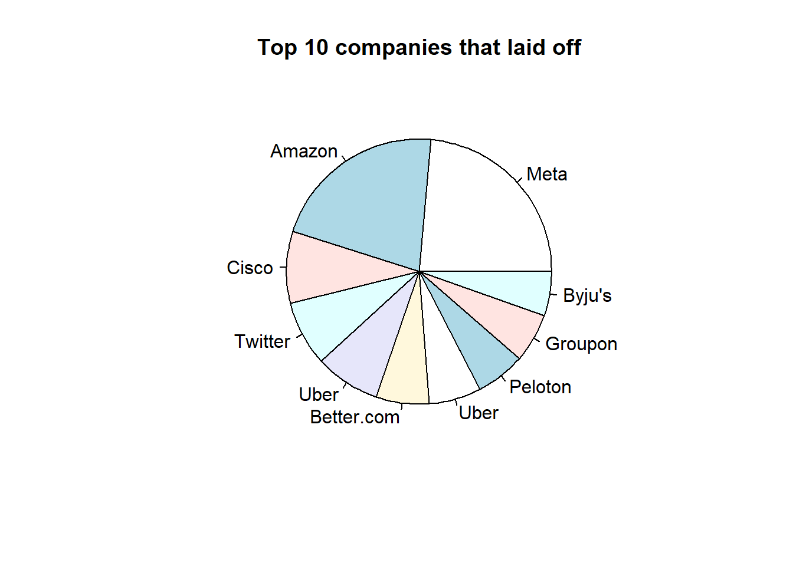
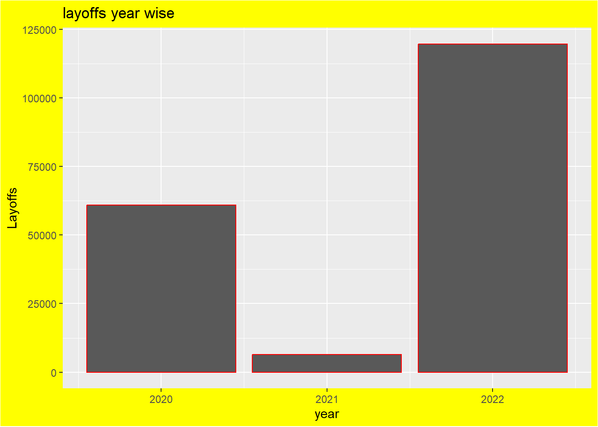

Code
library(tidyverse)
library(ggplot2)
library(lubridate)
library(readxl)
library(purrr)
library(dplyr)
library(stats)
knitr::opts_chunk$set(echo = TRUE, warning=FALSE, message=FALSE)
knitr::opts_chunk$set(echo = TRUE)library(tidyverse)
library(ggplot2)
library(lubridate)
library(readxl)
library(purrr)
library(dplyr)
library(stats)
knitr::opts_chunk$set(echo = TRUE, warning=FALSE, message=FALSE)
knitr::opts_chunk$set(echo = TRUE)Layoffs or the termination of employment for a large number of workers and have become increasingly common in recent years especially since the COVID-19 pandemic started. Layoffs are typically counted when more than 50 employees are let go from a company for a period of at least 31 days. The occurrence of layoffs can cause anxiety and paranoia among remaining employees, especially if they are struggling to meet their performance goals or arrive to work on time. According to recent statistics, a total of 17 million layoffs have been reported in the United States. Many data has been collected and analyzed on layoffs in the US, including trends, demographics, and industry-specific information. We will examined the details of these statistics in order to provide a thorough understanding of the layoff situation in USA and rest of the world.
Nevertheless, tech companies around the world are struggling to deal with the economic downturn. A combination of factors such as reduced consumer spending, increased interest rates from central banks, and a strong US dollar has raised concerns about the possibility of a recession. In response to these challenges, some tech firms have started laying off employees. For example, Meta recently laid off 13% of its workforce, which is over 11,000 people. This data set was created in an effort to allow the Kaggle community to analyze the current challenges facing the tech industry and potentially uncover useful insights.
A list of the top 10 companies that have laid off employees.
The top 3 companies that have laid off employees on a yearly basis.
The top 3 locations where the most layoffs have occurred on a yearly basis.
A list of the top 20 companies that have laid off a specific percentage of their employees.
The top 10 countries where the most layoffs have occurred.
The top 10 locations in the United States where the most layoffs have occurred.
The locations in India where the most layoffs have occurred.
The relationship between funds received and layoffs.
The stage of a company’s development at which the most layoffs have occurred.
The industry that has experienced the most layoffs.
The total number of layoffs on a yearly basis.
The number of layoffs that have occurred on a yearly basis according to country.
We will try our best to answer each on of the questions mentioned above, let’s get started-
# data frame
df <- read.csv("_data/layoffs.csv")
head(df) company location industry total_laid_off percentage_laid_off
1 Vedantu Bengaluru Education 385 NA
2 Plaid SF Bay Area Finance 260 0.20
3 Grover Berlin Retail 40 0.10
4 CircleCI SF Bay Area Product NA 0.17
5 Doma SF Bay Area Finance 515 0.40
6 BuzzFeed New York City Media 180 0.12
date stage country funds_raised
1 2022-12-07 Series E India 292
2 2022-12-07 Series D United States 734
3 2022-12-07 Unknown United States 2300
4 2022-12-07 Series F United States 315
5 2022-12-06 IPO United States 679
6 2022-12-06 IPO United States 696company - This column refers to the name of the company that has experienced a layoff.
location - This column refers to the location of the layoff, which could be a city, state, or region.
industry - This column refers to the industry in which the company operates, such as tech, healthcare, or finance.
total_laid_off - This column refers to the total number of employees who were laid off by the company.
percentage_laid_off - This column refers to the percentage of the company’s workforce that was laid off.
date - This column refers to the date on which the layoff occurred.
stage - This column refers to the stage of funding that the company was in at the time of the layoff. This could be early-stage, late-stage, or publicly traded.
country - This column refers to the name of the country in which the company is located.
funds_raised - This column refers to the amount of funds that the company had raised, in millions of dollars, prior to the layoff. This information could be relevant in understanding the financial situation of the company at the time of the layoff.
Let’s have a look on the last few rows-
# Get the last six rows of df
tail(df) company location industry total_laid_off
1747 Service Los Angeles Travel NA
1748 HopSkipDrive Los Angeles Transportation 8
1749 Panda Squad SF Bay Area Consumer 6
1750 Tamara Mellon Los Angeles Retail 20
1751 EasyPost Salt Lake City Logistics 75
1752 Homebound SF Bay Area Real Estate NA
percentage_laid_off date stage country funds_raised
1747 1.00 2020-03-16 Seed United States 5.1
1748 0.10 2020-03-13 Unknown United States 45.0
1749 0.75 2020-03-13 Seed United States 1.0
1750 0.40 2020-03-12 Series C United States 90.0
1751 NA 2020-03-11 Series A United States 12.0
1752 NA Unknown United States 128.0Get the class of each column in df-
# sapply will get the class of each column
sapply(df, class) company location industry total_laid_off
"character" "character" "character" "integer"
percentage_laid_off date stage country
"numeric" "character" "character" "character"
funds_raised
"numeric" # Use sapply to apply a lambda function to each column in the df data frame
missing_counts <- sapply(df, function(x) {
# Within the lambda function, we will use the sum and is.na functions to count the number of missing values in x
sum(is.na(x))
})
# then finally we will print the resulting vector of missing value counts
missing_counts company location industry total_laid_off
0 0 0 520
percentage_laid_off date stage country
576 0 0 0
funds_raised
130 # Use the drop_na function to remove rows with missing values from the df
df <- df %>% drop_na()
# Using sapply to apply a lambda function to each column in the df
missing_counts <- sapply(df, function(x) {
# Within the lambda function, use the sum and is.na functions to count the number of missing values in x
sum(is.na(x))
})
# then finally we will print the resulting vector of missing value counts
missing_counts company location industry total_laid_off
0 0 0 0
percentage_laid_off date stage country
0 0 0 0
funds_raised
0 Let’s convert character columns to factor columns in df-
# converting character to factor
df <- df %>% mutate_if(is.character,as.factor)
glimpse(df)Rows: 859
Columns: 9
$ company <fct> Plaid, Grover, Doma, BuzzFeed, Chipper Cash, Stash…
$ location <fct> SF Bay Area, Berlin, SF Bay Area, New York City, S…
$ industry <fct> Finance, Retail, Finance, Media, Finance, Finance,…
$ total_laid_off <int> 260, 40, 515, 180, 50, 32, 20, 65, 30, 47, 110, 10…
$ percentage_laid_off <dbl> 0.200, 0.100, 0.400, 0.120, 0.125, 0.080, 0.080, 0…
$ date <fct> 2022-12-07, 2022-12-07, 2022-12-06, 2022-12-06, 20…
$ stage <fct> Series D, Unknown, IPO, IPO, Series C, Unknown, Se…
$ country <fct> United States, United States, United States, Unite…
$ funds_raised <dbl> 734, 2300, 679, 696, 302, 480, 165, 265, 103, 184,…Now we will count the number of unique values in the company column of df-
#counting the number of unique values
n_distinct(df$company)[1] 762# Convert the date column to a year column and a month column
df$yrs <- strftime(df$date,'%Y') %>% as.factor() # extract year from date and convert to a factor
df$mnt <- strftime(df$date,'%m') %>% as.factor() # extract month from date and convert to a factorNow let’s see the mean, median, and standard deviation of total_laid_off.
#mean will calculates the average
mean(df$total_laid_off)[1] 218.8068#median will calculates the median
median(df$total_laid_off)[1] 75#sd will calculates the standard deviation
sd(df$total_laid_off)[1] 641.0096Setup figure size-
fig <- function(width, height) {
# Set the width and height options for the plot
options(repr.plot.width = width, repr.plot.height = height)
}
# Call it
fig(20, 10)# Get the number of unique values in the location
print(length(unique(df$location)))[1] 99# Get the unique values in the location
unique(df$location) [1] SF Bay Area Berlin New York City Tel Aviv
[5] Boston Burlington Singapore Los Angeles
[9] Jakarta Sacramento Buenos Aires Bengaluru
[13] London Melbourne Sao Paulo Waterloo
[17] Lagos Dubai Gurugram Phoenix
[21] Gothenburg Toronto Dublin Seattle
[25] Nairobi Dover Hamburg San Diego
[29] Logan Tallin Lehi Columbus
[33] Nebraska City Copenhagen Vancouver Oslo
[37] Stockholm Pittsburgh Montreal San Luis Obispo
[41] Jerusalem Austin New Delhi Belo Horizonte
[45] Chicago Salt Lake City Bangkok Raleigh
[49] Portland Bristol Washington D.C. Indianapolis
[53] Stamford Curitiba Mumbai Boulder
[57] Sydney Detroit Ottawa Ferdericton
[61] Dakar Florianópolis Philadelphia Hong Kong
[65] Beijing Vienna Atlanta Dallas
[69] Spokane Chennai Reno Helsinki
[73] Malmo Kuala Lumpur Bend Mexico City
[77] Cincinnati Miami Moscow Shanghai
[81] Non-U.S. Nashville Las Vegas Edinburgh
[85] Madison Amsterdam Santa Fe Denver
[89] Ahmedabad Joinville Zurich Missoula
[93] Minneapolis Guadalajara Blumenau Milwaukee
[97] Ann Arbor Lisbon Munich
99 Levels: Ahmedabad Amsterdam Ann Arbor Atlanta Austin Bangkok ... Zurich# Get the number of unique values in the industry
print(length(unique(df$industry)))[1] 28# Get the unique values in the industry
unique(df$industry) [1] Finance Retail Media Security
[6] Marketing Food Crypto Education Other
[11] Consumer Transportation Healthcare Infrastructure Data
[16] Sales Fitness Real Estate Support Logistics
[21] Recruiting Construction HR Product Aerospace
[26] Legal Travel Energy
28 Levels: Aerospace Construction Consumer Crypto Data Education ... Travel# Get the unique values in the stage
unique(df$stage) [1] Series D Unknown IPO Series C Series E
[6] Series B Private Equity Series A Series J Series F
[11] Acquired Series H Series G Seed Series I
15 Levels: Acquired IPO Private Equity Seed Series A Series B ... Unknown# Total how many unique countries are there in the dataset
unique(df$country) [1] United States Israel Singapore
[4] Indonesia Argentina India
[7] United Kingdom Australia Germany
[10] Brazil Canada Nigeria
[13] Sweden Ireland Kenya
[16] Estonia Norway Denmark
[19] Thailand Senegal Hong Kong
[22] China United Arab Emirates Austria
[25] Finland Malaysia Mexico
[28] Russia Seychelles Netherlands
[31] Switzerland Portugal
32 Levels: Argentina Australia Austria Brazil Canada China Denmark ... United States# Total how many unique companies are there in the dataset
length(unique(df$company))[1] 762# Convert the 'date' column to a date data type
df$date <- as.Date(df$date)
# Extract the month and year from the 'date' column
df$month <- month(df$date)
df$year <- year(df$date)# Select rows that are duplicates
duplicate_rows <- df[duplicated(df),]
# Remove duplicate rows from the data frame
df <- df[!duplicated(df),]colSums(is.na(df)) company location industry total_laid_off
0 0 0 0
percentage_laid_off date stage country
0 0 0 0
funds_raised yrs mnt month
0 0 0 0
year
0 summary(df) company location industry total_laid_off
Uber : 4 SF Bay Area :236 Finance :124 Min. : 3.0
Doma : 3 New York City:101 Retail : 72 1st Qu.: 35.0
Glossier: 3 Boston : 40 Marketing : 61 Median : 75.0
Intercom: 3 Los Angeles : 34 Healthcare : 60 Mean : 218.2
Katerra : 3 Seattle : 32 Transportation: 58 3rd Qu.: 160.0
Latch : 3 Bengaluru : 31 Food : 50 Max. :11000.0
(Other) :839 (Other) :384 (Other) :433
percentage_laid_off date stage country
Min. :0.0000 Min. :2020-03-12 Series B:144 United States:561
1st Qu.:0.1000 1st Qu.:2020-05-03 IPO :128 India : 55
Median :0.1700 Median :2022-06-02 Series C:121 Canada : 48
Mean :0.2377 Mean :2021-09-16 Unknown :115 Brazil : 34
3rd Qu.:0.3000 3rd Qu.:2022-08-15 Series D:111 Israel : 28
Max. :1.0000 Max. :2022-12-07 Series A: 64 Germany : 27
(Other) :175 (Other) :105
funds_raised yrs mnt month year
Min. : 0.00 2020:331 04 :164 Min. : 1.000 Min. :2020
1st Qu.: 51.25 2021: 13 06 :140 1st Qu.: 4.000 1st Qu.:2020
Median : 153.50 2022:514 05 :110 Median : 6.000 Median :2022
Mean : 880.37 11 :101 Mean : 6.501 Mean :2021
3rd Qu.: 425.25 07 : 84 3rd Qu.: 8.000 3rd Qu.:2022
Max. :121900.00 08 : 73 Max. :12.000 Max. :2022
(Other):186 #creating a subset of df by filtering for rows where percentage_laid_off = 1
subset(df, percentage_laid_off == 1) company location industry total_laid_off
58 Deliveroo Australia Melbourne Food 120
89 Planetly Berlin Other 200
112 Fifth Season Pittsburgh Food 100
137 Playdots New York City Consumer 65
163 Kitty Hawk SF Bay Area Aerospace 100
181 Simple Feast Copenhagen Food 150
199 Reali SF Bay Area Real Estate 140
256 Metigy Sydney Marketing 75
273 Soluto Tel Aviv Support 120
306 Butler Hospitality New York City Food 1000
327 WanderJaunt SF Bay Area Travel 85
331 Crejo.Fun Bengaluru Education 170
375 SummerBio SF Bay Area Healthcare 101
415 The Grommet Boston Retail 40
436 Udayy Gurugram Education 100
458 BeyondMinds Tel Aviv Data 65
482 SEND Sydney Food 300
493 Ahead SF Bay Area Healthcare 44
521 Katerra SF Bay Area Construction 2434
525 Hubba Toronto Retail 45
527 Pocketmath Singapore Marketing 21
531 Bridge Connector Nashville Healthcare 154
543 Eatsy Singapore Food 20
546 Buy.com / Rakuten SF Bay Area Retail 87
562 Dark SF Bay Area Product 6
594 Bluprint Denver Education 137
600 Stay Alfred Spokane Travel 221
615 Deliv SF Bay Area Retail 669
625 Jump New York City Transportation 500
670 TutorMundi Sao Paulo Education 4
722 Atsu Seattle Infrastructure 6
816 Amplero Seattle Marketing 17
820 HOOQ Singapore Consumer 250
834 Consider.co SF Bay Area Other 13
856 Help.com Austin Support 16
percentage_laid_off date stage country funds_raised yrs mnt
58 1 2022-11-15 IPO Australia 1700.0000 2022 11
89 1 2022-11-04 Acquired Germany 5.0000 2022 11
112 1 2022-10-28 Series B United States 35.0000 2022 10
137 1 2022-10-13 Acquired United States 10.0000 2022 10
163 1 2022-09-21 Unknown United States 1.0000 2022 09
181 1 2022-09-07 Unknown Denmark 173.0000 2022 09
199 1 2022-08-24 Series B United States 117.0000 2022 08
256 1 2022-07-31 Series B Australia 18.0000 2022 07
273 1 2022-07-24 Acquired Israel 18.0000 2022 07
306 1 2022-07-08 Series B United States 50.0000 2022 07
327 1 2022-07-01 Series B United States 26.0000 2022 07
331 1 2022-06-30 Seed India 3.0000 2022 06
375 1 2022-06-20 Unknown United States 7.0000 2022 06
415 1 2022-06-09 Acquired United States 5.0000 2022 06
436 1 2022-06-01 Seed India 2.0000 2022 06
458 1 2022-05-23 Series A Israel 16.0000 2022 05
482 1 2022-05-04 Seed Australia 3.0000 2022 05
493 1 2022-04-14 Unknown United States 9.0000 2022 04
521 1 2021-06-01 Unknown United States 1600.0000 2021 06
525 1 2021-02-01 Series B Canada 61.0000 2021 02
527 1 2021-01-20 Unknown Singapore 20.0000 2021 01
531 1 2020-11-17 Series B United States 45.0000 2020 11
543 1 2020-08-08 Seed Singapore 0.9755 2020 08
546 1 2020-07-30 Acquired United States 42.4000 2020 07
562 1 2020-06-23 Seed United States 3.0000 2020 06
594 1 2020-05-26 Acquired United States 108.0000 2020 05
600 1 2020-05-20 Series B United States 62.0000 2020 05
615 1 2020-05-13 Series C United States 80.0000 2020 05
625 1 2020-05-07 Acquired United States 11.0000 2020 05
670 1 2020-04-24 Series A Brazil 2.0000 2020 04
722 1 2020-04-10 Unknown United States 1.0000 2020 04
816 1 2020-03-29 Series B United States 25.0000 2020 03
820 1 2020-03-27 Unknown Singapore 95.0000 2020 03
834 1 2020-03-26 Seed United States 5.0000 2020 03
856 1 2020-03-16 Seed United States 6.0000 2020 03
month year
58 11 2022
89 11 2022
112 10 2022
137 10 2022
163 9 2022
181 9 2022
199 8 2022
256 7 2022
273 7 2022
306 7 2022
327 7 2022
331 6 2022
375 6 2022
415 6 2022
436 6 2022
458 5 2022
482 5 2022
493 4 2022
521 6 2021
525 2 2021
527 1 2021
531 11 2020
543 8 2020
546 7 2020
562 6 2020
594 5 2020
600 5 2020
615 5 2020
625 5 2020
670 4 2020
722 4 2020
816 3 2020
820 3 2020
834 3 2020
856 3 2020head(df, 2) company location industry total_laid_off percentage_laid_off date
1 Plaid SF Bay Area Finance 260 0.2 2022-12-07
2 Grover Berlin Retail 40 0.1 2022-12-07
stage country funds_raised yrs mnt month year
1 Series D United States 734 2022 12 12 2022
2 Unknown United States 2300 2022 12 12 2022colSums(is.na(df)) company location industry total_laid_off
0 0 0 0
percentage_laid_off date stage country
0 0 0 0
funds_raised yrs mnt month
0 0 0 0
year
0 dim(df)[1] 858 13# subset the data by selecting rows where company = Lyft
df[df$company == "Lyft", ] company location industry total_laid_off percentage_laid_off
93 Lyft SF Bay Area Transportation 700 0.13
283 Lyft SF Bay Area Transportation 60 0.02
650 Lyft SF Bay Area Transportation 982 0.17
date stage country funds_raised yrs mnt month year
93 2022-11-03 IPO United States 4900 2022 11 11 2022
283 2022-07-20 IPO United States 4900 2022 07 7 2022
650 2020-04-29 IPO United States 4900 2020 04 4 2020This will show all the company names which are their multiple times.
Now, we will check the data, we will do more cleaning and re-factoring.
head(df, n = 2) company location industry total_laid_off percentage_laid_off date
1 Plaid SF Bay Area Finance 260 0.2 2022-12-07
2 Grover Berlin Retail 40 0.1 2022-12-07
stage country funds_raised yrs mnt month year
1 Series D United States 734 2022 12 12 2022
2 Unknown United States 2300 2022 12 12 2022colSums(is.na(df)) company location industry total_laid_off
0 0 0 0
percentage_laid_off date stage country
0 0 0 0
funds_raised yrs mnt month
0 0 0 0
year
0 df <- df %>% drop_na()
df %>% sapply(function(x)sum(is.na(x))) company location industry total_laid_off
0 0 0 0
percentage_laid_off date stage country
0 0 0 0
funds_raised yrs mnt month
0 0 0 0
year
0 df <- df %>% mutate_if(is.character,as.factor)
glimpse(df)Rows: 858
Columns: 13
$ company <fct> Plaid, Grover, Doma, BuzzFeed, Chipper Cash, Stash…
$ location <fct> SF Bay Area, Berlin, SF Bay Area, New York City, S…
$ industry <fct> Finance, Retail, Finance, Media, Finance, Finance,…
$ total_laid_off <int> 260, 40, 515, 180, 50, 32, 20, 65, 30, 47, 110, 10…
$ percentage_laid_off <dbl> 0.200, 0.100, 0.400, 0.120, 0.125, 0.080, 0.080, 0…
$ date <date> 2022-12-07, 2022-12-07, 2022-12-06, 2022-12-06, 2…
$ stage <fct> Series D, Unknown, IPO, IPO, Series C, Unknown, Se…
$ country <fct> United States, United States, United States, Unite…
$ funds_raised <dbl> 734, 2300, 679, 696, 302, 480, 165, 265, 103, 184,…
$ yrs <fct> 2022, 2022, 2022, 2022, 2022, 2022, 2022, 2022, 20…
$ mnt <fct> 12, 12, 12, 12, 12, 12, 12, 12, 12, 12, 12, 12, 11…
$ month <dbl> 12, 12, 12, 12, 12, 12, 12, 12, 12, 12, 12, 12, 11…
$ year <dbl> 2022, 2022, 2022, 2022, 2022, 2022, 2022, 2022, 20…table(df$year)
2020 2021 2022
331 13 514 par(bg = "lightgray")
# group the data by country and count the number of unique companies
layoff_by_country <- df %>% group_by(country) %>% summarize(no_of_companies = n_distinct(company)) %>%
arrange(desc(no_of_companies)) %>% head(10)
# create the bar plot using barplot
barplot(layoff_by_country$no_of_companies, main = "Number of companies did layoffs by Country",
xlab = "Country", ylab = "Number of companies", col = "green",
names.arg = layoff_by_country$country, las = 2)
This code first groups the data by country and counts the number of unique companies in each group. It then arranges the resulting data frame in descending order based on the number of companies and selects the top 10 rows. Finally, it creates a bar plot using the barplot function, with the number of companies on the y-axis and the country on the x-axis. The plot is titled Number of Companies Undertook Lay Offs by Country.
In the dataset, there is a company based in the United States that laid off 11,000 employees, which is the highest number of layoffs for any company in the dataset. The size of layoffs is very high in both the United States and India, but surprisingly, it is very low in China which is not even in top 10 compared to the United States and India.
par(bg = "lightgray")
# group the data by location and count the number of unique companies
layoff_by_city <- df %>% group_by(location) %>% summarize(no_of_companies = n_distinct(company)) %>%
arrange(desc(no_of_companies)) %>% head(15)
# create the bar plot using barplot
barplot(layoff_by_city$no_of_companies, main = "Number of Companies did layoffs in the big Cities",
xlab = "City", ylab = "Number of companies", col = "red",
names.arg = layoff_by_city$location, las = 2, cex.names = 0.8)
# add the number of companies to each bar using the text function
text(x = 1:length(layoff_by_city$no_of_companies), y = layoff_by_city$no_of_companies,
labels = layoff_by_city$no_of_companies, pos = 3.9, cex = 0.8)
This code first groups the data by location and counts the number of unique companies in each group. It then arranges the resulting data frame in descending order based on the number of companies and selects the top 20 rows. Finally, it creates a bar plot using the barplot function, with the number of companies on the y-axis and the location (city) on the x-axis. The plot is titled Number of Companies Undertook Lay Offs in the big Cities.
The San Francisco Bay Area (also known as Silicon Valley), New York City, and Bengalore are all renowned tech hubs that have seen significant numbers of layoffs in recent times. These cities are known for their high concentration of technology companies and are often considered the centers of innovation and growth in the tech industry. However, economic downturns and other factors can lead to layoffs in these areas, resulting in a reduction of the tech workforce in these cities. Now, If we closely observe then we won’t see any small cities in this list which says that all the big city area has high layoffs than smaller cities.
top_industry <- df %>%
group_by(industry) %>%
summarise(total_laid_off = sum(total_laid_off)) %>%
arrange(desc(total_laid_off))dim(top_industry)[1] 28 2par(bg = "lightgray")
colors <- c("red", "blue", "green", "yellow", "orange")
barplot(top_industry$total_laid_off, names.arg = top_industry$industry,
xlab = "Industry", ylab = "Layoffs", main = "Industry vs Layoffs", col = colors)
The layoffs had a notable effect on three specific industries: transportation, consumer, and retail. These industries were likely negatively impacted by the layoffs in some way such as a decrease in business or financial losses.
df_industries <- df %>%
group_by(industry) %>%
summarize(total_laid_off = sum(total_laid_off)) %>%
arrange(total_laid_off)
ggplot(data = df_industries, aes(x = industry)) +
geom_bar(aes(y = total_laid_off), fill = "red", stat = "identity") +
labs(title = "Total Layoffs in different industries world wide since 2020", y = "Number of layoffs reported") +
theme(plot.title = element_text(size = 14),
axis.title = element_text(size = 12),
axis.text.x = element_text(angle = 90, vjust = 0.5))
On average 25,000 employees from the Transportation industry were laid off from their respective companies. This was followed by the retail, consumer, finance, and real estate industries in this order.
# create a vector of the top 10 companies with the most layoffs, based on the total_laid_off column
top10_idx <- order(df$total_laid_off, decreasing = TRUE)[1:10]
# subset the dataframe to only include the top 10 companies
df_top10 <- df[top10_idx, ]
# create a pie chart of the top 10 companies, using the total_laid_off column as the values and the company column as the labels
pie(df_top10$total_laid_off, labels = df_top10$company, main = "Top 10 companies that laid off")
Here we can see that the layoff was highest in Meta
after doing some research, from source we come to know that on November 9, 2022, Meta announced that it had decided to terminate the employment of 11,000 employees, which represents approximately 13% of its total workforce. However, the company did not publicly disclose the specific breakdown of the layoffs among different departments or job levels. It was rumored that the Recruiting and Business teams were disproportionately affected by the layoffs, but there was no official confirmation of this. It is not known how many employees in the Engineering department were affected by the layoffs, or how many junior and senior employees were impacted.
It seems that the Recruiting and Engineering departments at a company were particularly affected by recent layoffs. These two departments made up around 50% of the total number of self-reported layoffs. The Engineering department appears to have primarily laid off junior employees, while the Product, Marketing, and Sales departments seem to have mostly laid off senior employees. Of the laid-off engineers, it was stated that 46% will require visa support, which may refer to employees who are not citizens or permanent residents of the country in which the company is located and who are working there on a temporary visa. On the other hand, only 8% of laid-off employees from the Recruiting department are expected to require visa support. It is not clear from the information provided the context or circumstances of the layoffs or the specific reasons for the departmental and job level differences.
total_laid_year <- df %>%
group_by(year) %>%
summarize(total_laid_off = sum(total_laid_off))
total_laid_year# A tibble: 3 × 2
year total_laid_off
<dbl> <int>
1 2020 60960
2 2021 6490
3 2022 119755ggplot(data = total_laid_year, aes(x = year, y = total_laid_off)) +
geom_bar(stat = "identity", color = "red") +
labs(x = "year", y = "Layoffs") +
ggtitle("layoffs year wise") +
theme(plot.background = element_rect(fill = "yellow"))
df %>%
group_by(location) %>%
summarise(total_laid_off = n_distinct(company)) %>%
arrange(location)# A tibble: 99 × 2
location total_laid_off
<fct> <int>
1 Ahmedabad 1
2 Amsterdam 1
3 Ann Arbor 1
4 Atlanta 3
5 Austin 10
6 Bangkok 1
7 Beijing 1
8 Belo Horizonte 2
9 Bend 1
10 Bengaluru 25
# … with 89 more rowsdf %>%
# Group the data by year and stage
group_by(year, stage) %>%
# Summarize the data by counting the number of distinct funds raised within each group
summarise(n = n_distinct(company), .groups = "keep") %>%
ggplot(mapping = aes(x = year, y = n, color = stage)) +
geom_point() +
geom_line() +
labs(y = "Total laid off", title = "Total laid off in stages-wise over years")
df %>%
group_by(year, stage) %>%
summarise(n = n_distinct(funds_raised), .groups = "keep") %>%
ggplot(mapping = aes(x = year, y = n, color = stage)) +
geom_point() +
geom_line() +
labs(y = "Funds Raised", title = "Funds raised included in the stage over the years")
df %>% count(company) %>% arrange(desc(n)) company n
1 Uber 4
2 Doma 3
3 Glossier 3
4 Intercom 3
5 Katerra 3
6 Latch 3
7 Lyft 3
8 Oda 3
9 Peloton 3
10 Redfin 3
11 RenoRun 3
12 Trax 3
13 Unacademy 3
14 Zeus Living 3
15 2TM 2
16 Better.com 2
17 Bird 2
18 Bizzabo 2
19 Blend 2
20 Bonsai 2
21 Bounce 2
22 Brex 2
23 Carvana 2
24 Compass 2
25 Crypto.com 2
26 Cybereason 2
27 Ebanx 2
28 Ethos Life 2
29 Flyhomes 2
30 Food52 2
31 FrontRow 2
32 Fundbox 2
33 Gemini 2
34 Gopuff 2
35 Groupon 2
36 Homie 2
37 Hootsuite 2
38 Hopin 2
39 Infarm 2
40 IronNet 2
41 Juul 2
42 Knotel 2
43 Kry 2
44 Leafly 2
45 Lighter Capital 2
46 Loft 2
47 Loom 2
48 MakeMyTrip 2
49 Mejuri 2
50 Metromile 2
51 MindBody 2
52 Netflix 2
53 New Relic 2
54 On Deck 2
55 OneTrust 2
56 Opendoor 2
57 Patreon 2
58 Pollen 2
59 Quantcast 2
60 QuintoAndar 2
61 Rad Power Bikes 2
62 RealSelf 2
63 Ritual 2
64 Rivian 2
65 Robinhood 2
66 Salesforce 2
67 Salsify 2
68 Sendy 2
69 Smava 2
70 Sonder 2
71 Stitch Fix 2
72 StockX 2
73 Swiggy 2
74 Truepill 2
75 UiPath 2
76 Vedantu 2
77 Vee 2
78 WanderJaunt 2
79 Zilingo 2
80 Zillow 2
81 Zomato 2
82 &Open 1
83 10X Genomics 1
84 1stdibs 1
85 54gene 1
86 6sense 1
87 99 1
88 Abra 1
89 Acast 1
90 Acko 1
91 Ada 1
92 Ada Support 1
93 Adaptive Biotechnologies 1
94 AdRoll 1
95 Ahead 1
96 Airbnb 1
97 Airtime 1
98 Ajaib 1
99 AlayaCare 1
100 Albert 1
101 AliExpress Russia 1
102 Alto Pharmacy 1
103 Amazon 1
104 Amperity 1
105 Amplero 1
106 Andela 1
107 Anodot 1
108 Antidote Health 1
109 Apartment List 1
110 App Annie 1
111 AppLovin 1
112 ApplyBoard 1
113 Aqgromalin 1
114 Aqua 1
115 Aqua Security 1
116 Argo AI 1
117 Argyle 1
118 Arrive Logistics 1
119 Asana 1
120 Astra 1
121 AtoB 1
122 Atsu 1
123 Aura 1
124 Automation Anywhere 1
125 AvantStay 1
126 Avo 1
127 Away 1
128 Aya 1
129 B8ta 1
130 Banxa 1
131 Baton 1
132 Bench 1
133 Berlin Brands Group 1
134 Bestow 1
135 Bevi 1
136 Beyond Meat 1
137 BeyondMinds 1
138 BioMarin 1
139 BitMEX 1
140 BitOasis 1
141 Bitpanda 1
142 Bitso 1
143 BitTitan 1
144 Blockchain.com 1
145 BlockFi 1
146 Blueground 1
147 Bluprint 1
148 Bolt 1
149 BookClub 1
150 BookMyShow 1
151 Boozt 1
152 Borrowell 1
153 BounceX 1
154 Branch 1
155 Branch Metrics 1
156 Brave Care 1
157 Breathe 1
158 Breather 1
159 Bridge Connector 1
160 Bright Machines 1
161 Bright Money 1
162 Brighte 1
163 Bringg 1
164 Bryter 1
165 Buenbit 1
166 Builder 1
167 Built In 1
168 Bullish 1
169 BusBud 1
170 Bustle Digital Group 1
171 Butler Hospitality 1
172 Button 1
173 Buy.com / Rakuten 1
174 BuzzFeed 1
175 Byju's 1
176 Cadre 1
177 Calibrate 1
178 Calm 1
179 Cameo 1
180 Candy Digital 1
181 Canoo 1
182 Capitolis 1
183 CaptivateIQ 1
184 Carbon Health 1
185 Careem 1
186 Career Karma 1
187 CarGurus 1
188 Carousell 1
189 Cars24 1
190 Carta 1
191 Carwow 1
192 Casper 1
193 Cazoo 1
194 Celsius 1
195 Cerebral 1
196 Chargebee 1
197 Checkmarx 1
198 Checkout.com 1
199 Checkr 1
200 Chime 1
201 Chipper Cash 1
202 Cisco 1
203 CityMall 1
204 Clarify Health 1
205 ClassPass 1
206 Clear 1
207 Clearbanc 1
208 Clearco 1
209 CleverTap 1
210 ClickUp 1
211 Clinc 1
212 Cloudinary 1
213 Clutch 1
214 Code42 1
215 Coding Dojo 1
216 Cogito 1
217 Coinbase 1
218 CoinJar 1
219 Coinsquare 1
220 Community 1
221 Compete 1
222 ConsenSys 1
223 Consider.co 1
224 ContaAzul 1
225 ContraFect 1
226 Convene 1
227 Convoy 1
228 Coterie Insurance 1
229 Crayon 1
230 Credit Sesame 1
231 Crejo.Fun 1
232 CrowdStreet 1
233 Cruise 1
234 CTO.ai 1
235 Culture Amp 1
236 Culture Trip 1
237 CureFit 1
238 Curve 1
239 Cvent 1
240 D2iQ 1
241 Dapper Labs 1
242 Dark 1
243 DataRails 1
244 DataRobot 1
245 Deliv 1
246 Deliveroo 1
247 Deliveroo Australia 1
248 Demandbase 1
249 Deputy 1
250 Descartes Labs 1
251 DialSource 1
252 Divergent 3D 1
253 Divvy Homes 1
254 Dock 1
255 Docly 1
256 DocuSign 1
257 Domestika 1
258 Domo 1
259 DoorDash 1
260 Dover 1
261 Dropbox 1
262 Dutchie 1
263 Dynamic Signal 1
264 Earnin 1
265 EasyPost 1
266 Eatsy 1
267 Ecobee 1
268 Eden / Managed By Q 1
269 eGym 1
270 Element AI 1
271 Elementor 1
272 Elinvar 1
273 Embroker 1
274 Emotive 1
275 Enjoy 1
276 Envoy 1
277 Equitybee 1
278 EquityZen 1
279 eToro 1
280 Eucalyptus 1
281 Eventbrite 1
282 Exodus 1
283 ezCater 1
284 FabHotels 1
285 Fabric 1
286 Facily 1
287 Faire 1
288 FarEye 1
289 Fifth Season 1
290 Finite State 1
291 Finleap Connect 1
292 Fiverr 1
293 Flipboard 1
294 Flockjay 1
295 Flytedesk 1
296 Flywheel Sports 1
297 Flywire 1
298 Foodsby 1
299 Forma.ai 1
300 Forward 1
301 FourKites 1
302 Foxtrot 1
303 Freetrade 1
304 Freshbooks 1
305 Frontdesk 1
306 Funding Societies 1
307 G2 1
308 Gather 1
309 Gem 1
310 Getaround 1
311 GetNinjas 1
312 GetYourGuide 1
313 Glassdoor 1
314 Glitch 1
315 GoBear 1
316 GoHealth 1
317 Gojek 1
318 GoodRx 1
319 GoPro 1
320 Gorillas 1
321 GoSpotCheck 1
322 GoTo Group 1
323 Grab 1
324 GrayMeta 1
325 Greenhouse Software 1
326 Grin 1
327 Group Nine Media 1
328 Grover 1
329 GumGum 1
330 Gympass 1
331 Happy Money 1
332 Hash 1
333 HealthMatch 1
334 Help.com 1
335 Heroes 1
336 Hibob 1
337 Highsnobiety 1
338 Hippo Insurance 1
339 Hireology 1
340 Hologram 1
341 HOOQ 1
342 HopSkipDrive 1
343 Horizn Studios 1
344 Hotmart 1
345 Houzz 1
346 Hubba 1
347 Hubilo 1
348 Huobi 1
349 Hyperscience 1
350 Ibotta 1
351 iFit 1
352 Iflix 1
353 Ike 1
354 Illumina 1
355 Immersive Labs 1
356 Immutable 1
357 Impala 1
358 Impossible Foods 1
359 Incredible Health 1
360 InDebted 1
361 Industrious 1
362 InfluxData 1
363 InfoSum 1
364 Innovaccer 1
365 Inspirato 1
366 Instamojo 1
367 Instructure 1
368 Integral Ad Science 1
369 Introhive 1
370 Intuit 1
371 Involves 1
372 iPrice Group 1
373 Iris Nova 1
374 IRL 1
375 iRobot 1
376 Iron Ox 1
377 Jam City 1
378 Jama 1
379 JetClosing 1
380 Jetty 1
381 Jimdo 1
382 Jiobit 1
383 Jobcase 1
384 JOKR 1
385 Jump 1
386 Juni 1
387 Kabam 1
388 Kayak / OpenTable 1
389 KeepTruckin 1
390 Kenoby 1
391 Khoros 1
392 Kiavi 1
393 Kickstarter 1
394 Kitopi 1
395 Kitty Hawk 1
396 Klarna 1
397 Klook 1
398 Knock 1
399 Kodiak Robotics 1
400 Koho 1
401 KoinWorks 1
402 Komodo Health 1
403 Kontist 1
404 Kraken 1
405 Kuda 1
406 Kueski 1
407 Lacework 1
408 Ladder Life 1
409 Lastline 1
410 Lattice 1
411 Lawgeex 1
412 LEAD 1
413 Legible 1
414 Lemon 1
415 Lending Club 1
416 Lendingkart 1
417 Lendis 1
418 Lever 1
419 Liftoff 1
420 Lightricks 1
421 Lime 1
422 LinkedIn 1
423 Linkfire 1
424 Linktree 1
425 Liv Up 1
426 LivePerson 1
427 Livspace 1
428 Loftium 1
429 Loftsmart 1
430 Loggi 1
431 Lokalise 1
432 Loop 1
433 Loopio 1
434 LoopMe 1
435 Lunchbox 1
436 Lusha 1
437 Lyst 1
438 MadeiraMadeira 1
439 Magic Leap 1
440 Mainstreet 1
441 Malwarebytes 1
442 Marketforce 1
443 MasterClass 1
444 Matterport 1
445 Maven 1
446 MediaMath 1
447 Meesho 1
448 Mercos 1
449 Meta 1
450 Metigy 1
451 MFine 1
452 Minted 1
453 Mixpanel 1
454 Mobile Premier League 1
455 Mogo 1
456 Momentive 1
457 Monzo 1
458 Moss 1
459 Movidesk 1
460 Mozilla 1
461 Mural 1
462 Mux 1
463 N26 1
464 Namely 1
465 Nate 1
466 Navi 1
467 Neon 1
468 Next Insurance 1
469 Niantic 1
470 Noom 1
471 Notarize 1
472 NS8 1
473 NSO 1
474 Numbrs 1
475 NuoDB 1
476 Nuri 1
477 Nuro 1
478 Nutanix 1
479 NYDIG 1
480 Nylas 1
481 Ocavu 1
482 Ola 1
483 Olive 1
484 Omie 1
485 OneWeb 1
486 Opencare 1
487 OpenWeb 1
488 OpenX 1
489 Optimizely 1
490 OrCam 1
491 Oriente 1
492 Oscar Health 1
493 OutboundEngine 1
494 Outbrain 1
495 Outreach 1
496 Outschool 1
497 Outside 1
498 Overtime 1
499 OwnBackup 1
500 Oye Rickshaw 1
501 Pacaso 1
502 Packable 1
503 PaisaBazaar 1
504 Panda Squad 1
505 Parsable 1
506 PatientPop 1
507 Pavilion Data 1
508 PayJoy 1
509 Pear Therapeutics 1
510 Pear Therapeutics 1
511 Peerspace 1
512 PeerStreet 1
513 Pendo 1
514 People.ai 1
515 Perimeter 81 1
516 Perion 1
517 PerkSpot 1
518 Permutive 1
519 PickYourTrail 1
520 Picsart 1
521 Pipedrive 1
522 Pipl 1
523 Pitch 1
524 Plaid 1
525 Planetly 1
526 Plato 1
527 Playdots 1
528 Pleo 1
529 Pliops 1
530 Plum 1
531 Pocketmath 1
532 PolicyGenius 1
533 Polly 1
534 Pomelo Fashion 1
535 Postmates 1
536 Preply 1
537 Procore 1
538 Project44 1
539 Puppet 1
540 Q4 1
541 Quandoo 1
542 Quanterix 1
543 Quanto 1
544 Quidax 1
545 Qumulo 1
546 Rasa 1
547 Reali 1
548 Recharge 1
549 Redesign Health 1
550 Redox 1
551 Reef 1
552 Remote 1
553 Remote Year 1
554 Repertoire Immune Medicines 1
555 ResearchGate 1
556 Revolut 1
557 Rhino 1
558 Rhumbix 1
559 Ribbon 1
560 Ridecell 1
561 RigUp 1
562 Rock Content 1
563 Roku 1
564 Root Insurance 1
565 Rover 1
566 Rows 1
567 Rubicon Project 1
568 Rubius 1
569 Rupeek 1
570 SafeGraph 1
571 Sage Therapeutics 1
572 Sami 1
573 Samsara 1
574 Sanar 1
575 Sandbox VR 1
576 Sauce Labs 1
577 ScaleFactor 1
578 Scoop 1
579 Segment 1
580 Sema4 1
581 SEND 1
582 Sendle 1
583 Sensibill 1
584 ShareChat 1
585 Shippo 1
586 Shipsi 1
587 Shogun 1
588 Shop101 1
589 Shopify 1
590 Showpad 1
591 Sidecar Health 1
592 SimilarWeb 1
593 Simple Feast 1
594 SIRCLO 1
595 Sisense 1
596 Skai 1
597 Skedulo 1
598 Skillz 1
599 Skyscanner 1
600 Snap 1
601 Snyk 1
602 Socure 1
603 SoFi 1
604 Sojern 1
605 Soluto 1
606 Sonos 1
607 SoundHound 1
608 Sourcegraph 1
609 Spin 1
610 Splunk 1
611 SpotHero 1
612 Spyce 1
613 SQream 1
614 Stack Overflow 1
615 Stash 1
616 Stash Financial 1
617 Stashaway 1
618 Stay Alfred 1
619 Stedi 1
620 Stord 1
621 Storytel 1
622 Stream 1
623 Stripe 1
624 Studio 1
625 Submittable 1
626 Substack 1
627 SummerBio 1
628 SumUp 1
629 Sunday 1
630 SundaySky 1
631 Superhuman 1
632 Superpedestrian 1
633 Swappie 1
634 Sweetgreen 1
635 SWVL 1
636 Swyft 1
637 SynapseFI 1
638 Synapsica 1
639 Synergysuite 1
640 Synthego 1
641 Syte 1
642 Taboola 1
643 Tally 1
644 Tamara Mellon 1
645 TaskUs 1
646 Teachmint 1
647 TealBook 1
648 Teleport 1
649 Textio 1
650 The Athletic 1
651 The Grommet 1
652 The Guild 1
653 The Mom Project 1
654 The Predictive Index 1
655 The RealReal 1
656 The Sill 1
657 TheSkimm 1
658 Thimble 1
659 Thinkific 1
660 ThirdLove 1
661 Thriver 1
662 Thumbtack 1
663 Tier Mobility 1
664 TIFIN 1
665 Toast 1
666 Tomo 1
667 Tonal 1
668 Tonkean 1
669 Top Hat 1
670 Tor 1
671 TouchBistro 1
672 Transfix 1
673 Transmit Security 1
674 TravelTriangle 1
675 Treehouse 1
676 Trell 1
677 TripActions 1
678 TripAdvisor 1
679 Triplebyte 1
680 TripleLift 1
681 TrueCar 1
682 TrueLayer 1
683 Truiloo 1
684 Trybe 1
685 Tufin 1
686 Turo 1
687 TutorMundi 1
688 Twiga 1
689 Twilio 1
690 Twitter 1
691 Ualá 1
692 Uberflip 1
693 Udaan 1
694 Udacity 1
695 Udayy 1
696 Ula 1
697 Unbabel 1
698 Unbounce 1
699 Uncapped 1
700 Unison 1
701 Unity 1
702 Unstoppable Domains 1
703 UPshow 1
704 Upstart 1
705 Urban Sports Club 1
706 Usermind 1
707 uShip 1
708 Varonis 1
709 Veev 1
710 Vendease 1
711 Verbit 1
712 Veriff 1
713 VerSe Innovation 1
714 Vesalius Therapeutics 1
715 Vezeeta 1
716 VideoAmp 1
717 Virgin Hyperloop 1
718 Voi 1
719 Vouch 1
720 Vox Media 1
721 Voyage SMS 1
722 Vroom 1
723 VSCO 1
724 VTEX 1
725 Wave 1
726 Wave Sports and Entertainment 1
727 Wayfair 1
728 Wayflyer 1
729 Waze 1
730 Wealthsimple 1
731 Weee! 1
732 Welkin Health 1
733 WeWork 1
734 Wheel 1
735 When I Work 1
736 WHOOP 1
737 Wildlife Studios 1
738 Wish 1
739 Wonder 1
740 Wonderschool 1
741 Wonolo 1
742 Wordstream 1
743 Workable 1
744 WorkRamp 1
745 Worksmith 1
746 Woven 1
747 Xiaohongshu 1
748 Yelp 1
749 Yojak 1
750 Yotpo 1
751 Zak 1
752 Zego 1
753 Zeitgold 1
754 Zencity 1
755 Zendesk 1
756 Zenefits 1
757 Zenoti 1
758 Zipcar 1
759 ZipRecruiter 1
760 Zoox 1
761 Zume 1
762 Zumper 1cor(df$funds_raised, df$total_laid_off)[1] 0.1677711# Using the total_laid_off column as the x-axis and the funds_raised column as the y-axis
# Group the data by the company column and color the lines red
ggplot(df, aes(x = total_laid_off, y = funds_raised, group = company, color = "red")) +
geom_line() +
labs(x = "Total Laid Off", y = "Funds Raised", title = "Funds Raised vs. Total Laid Off") +
theme(plot.title = element_text(hjust = 0.5))
# Use the total_laid_off column as the x-axis and the funds_raised column as the y-axis
# Group the data by the company column and color the lines red
ggplot(df, aes(x = funds_raised, y = total_laid_off, group = company, color = "red")) +
geom_line() +
labs(x = "Funds Raised", y = "Total Laid Off", title = "Total Laid Off vs. Funds Raised") +
theme(plot.title = element_text(hjust = 0.5))
library(plotly)
# Creating a scatterplot
plot_ly(data = df, x = ~funds_raised, y = ~total_laid_off, type = "scatter", mode = "markers", text = ~company)# x-axis represents the amount of funds raised by each company
# y-axis represents the total number of employees laid off by each companylibrary(plotly)
# Creating a scatterplot
plot_ly(data = df, x = ~total_laid_off, y = ~funds_raised, type = "scatter", mode = "markers", text = ~company)# x-axis represents the total number of employees laid off by each company
# y-axis represents the amount of funds raised by each companyThe above plot shows that there is no relationship or dependence between the funds raised and the number of layoffs.
unique(df$stage) [1] Series D Unknown IPO Series C Series E
[6] Series B Private Equity Series A Series J Series F
[11] Acquired Series H Series G Seed Series I
15 Levels: Acquired IPO Private Equity Seed Series A Series B ... Unknowndistinct(df, stage) stage
1 Series D
2 Unknown
3 IPO
4 Series C
5 Series E
6 Series B
7 Private Equity
8 Series A
9 Series J
10 Series F
11 Acquired
12 Series H
13 Series G
14 Seed
15 Series IThis is a list of all the stages that a company goes through, which in total consists of 15 stages.
library(plotly)
# Create a new dataframe called df_stage that groups the df by the stage column and summarizes the total_laid_off column by summing the values
df_stage <- df %>%
group_by(stage) %>%
summarize(total_laid_off = sum(total_laid_off)) %>%
# Sorting the resulting dataframe in descending order
arrange(desc(total_laid_off))
# create a horizontal bar chart using the df_stage. x-axis- total_laid_off & y-axis- stage
plot_ly(data = df_stage, x = ~total_laid_off, y = ~stage, type = "bar", orientation = "h", text = ~total_laid_off, color = c('orange')) %>%
layout(title = "Layoffs & company stage", plot_bgcolor = 'lightblue')The companies that were in the initial public offering (IPO) stage had the highest number of layoffs, followed by start-up companies whose stage was unknown. On the other hand, the least amount of layoffs occurred in seed stage companies. This pattern suggests that the companies that were further along in their development and had already gone public were more likely to experience layoffs, while the newer, smaller companies that were still in the early stages of development were less likely to do so.
As someone who had no previous experience with R and no technical background with R language, this class, all the challenges and project were challenging for me. I chose to work with a Layoffs data set because it is the type of data that I am really familiar with since I have looking for a job from a long time and I was up to date with the market since 2019. To begin the analysis, the data set was cleaned and any missing values were handled. This step was important because it allowed for the creation of more accurate figures and calculations. The data was cleaned in order to facilitate this process. Once the data cleaning was completed, further analysis could be conducted.
One of the most challenging aspects for me was identifying the focus of the data set in terms of cleaning, transforming and visulizing the data, as well as figuring out where to start with the analysis of the data. This was the first time I was doing data analysis, I have mostly worked as a front end developer but never as a data scientist. I decided to focus on the basics of analysis in this project to challenge myself, and if I were to continue with this project, I would look for ways to cross-tabulate the data in more depth, such as by combining many different data points to see different data analysis.
There were a large number of missing records in the dataset, and the data from 1,300 companies is not sufficient to give us a comprehensive understanding of layoffs. If we could obtain data from at least 10,000 companies, it would be much more useful in terms of understanding the impact of layoffs. One idea I will implement is to compare the data set year by year and observe the yearly layoff trend for the entire world, as well as for the United States alone and for the rest of the world excluding the United States. I will also look at how various industries performed on a yearly basis in India, and by removing data about India from the rest of the world, I will examine the results again to see which fields are consistently performing well or poorly. Another idea is to examine the yearly layoff trends excluding both the United States and India.
Overall, I believe that this project was helpful in allowing me to do the application of what I learned in this class. As I completed the project, I felt that I had gained a basic understanding of the functionality of R and how to structure basic code of R and also how the data analysis works. I found that I was able to approach each challenge more easily as I progressed through the project, although I still feel as though I have only done little bit of R and many more amount to learn. My goal in learning R in depth so I will be able to contribute to the corporate world by learning all functions of R from this class that I am familiar with to read data, filter data, provide specific data, clean data, transform data and very importantly visulize the data. I think all the challenges and speciflcally this project has helped me to develop these skills.
The United States has experienced the highest number of layoffs compared to any other country, with India coming in second. Of all the layoffs that have occurred since 2020, more than 75% have been in the United States. In 2022, the consumer industry in the United States has been the hardest hit by layoffs, while the food industry has been most affected outside the United States. Layoffs have also been seen in the transportation and food industries globally. The travel industry has experienced considerably fewer layoffs globally in 2022 compared to the previous year.
According to the research, in the United States, 40% of the population has experienced a layoff at least once in their career. In the past two years, 28% of Americans have reported being laid off from their company. In July 2022, 160 tech companies underwent layoffs. In 2022, there were a total of 2.12 million layoffs recorded in the business and professional services industry. In 2021, there were a total of 17 million layoffs recorded across all industries in the US. The trade and transportation industry saw 1.46 million layoffs between June 2021 and June 2022. Among adults between the ages of 18 and 34, 61% reported experiencing significant pressure and anxiety related to the possibility of being laid off. Women are 25% less likely to be laid off by companies compared to men. In the third quarter of 2022, 23,158 layoffs were recorded. A survey found that 46% of employees felt unprepared for layoffs and separations.
Despite the significant changes and challenges brought about by the coronavirus pandemic, tech companies continue to prioritize engineering talent in their outbound recruitment efforts. It is possible that the pandemic has even intensified this trend, as startups may be focusing more on product development and less on sales and customer success due to slowed customer growth. Previous analysis has shown that tech layoffs have disproportionately affected sales and customer success roles. As a result, tech companies may be able to redirect their resources towards product development initiatives, leading to a sustained demand for engineers.
Layoffs.fyi. (n.d.). Layoffs and job loss tracker. Retrieved from https://layoffs.fyi/.
R Project. (n.d.). R: A language and environment for statistical computing. Retrieved from https://www.r-project.org/.
Kaggle. (n.d.). Layoffs 2022 [Data set]. Retrieved from https://www.kaggle.com/datasets/swaptr/layoffs-2022.
Smith, J. (2022, November 5). Meta layoffs analysis. Retrieved from https://community.powerbi.com/t5/Data-Stories-Gallery/Meta-layoffs-analysis-November-2022/m-p/2951409
Demand Sage. (n.d.). Layoff statistics. Retrieved from https://www.demandsage.com/layoff-statistics/